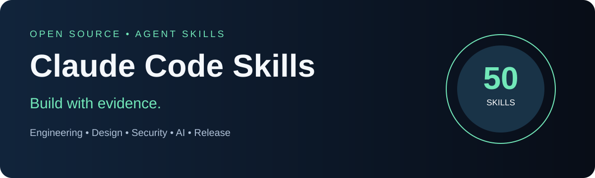

Claude Code Skills
50 original Agent Skills with technical knowledge, decision rules and verification protocols.
50 skills
/auditRepository audit · Quality/debuggingRoot cause debugging · Quality/testRegression testing · Quality/code-reviewCode review · Quality/fix-allDefect remediation · Quality/performancePerformance engineering · Quality/anti-slopUI design improvement · Design/responsiveResponsive design · Design/accessibilityAccessible interfaces · Design/formsRobust forms · Design/i18nInternationalization · Design/seoTechnical SEO · Growth/content-checkContent quality · Growth/securityDefensive security · Safety/privacyPrivacy engineering · Safety/dependency-reviewDependency review · Safety/incidentIncident triage · Safety/token-saveContext efficiency · Workflow/handoffAgent handoff · Workflow/docsDeveloper documentation · Workflow/onboardingContributor onboarding · Workflow/git-hygieneSafe Git workflow · Workflow/cost-reviewCost optimization · Workflow/api-contractAPI contracts · Engineering/database-migrationSchema migration · Engineering/architectureSystem architecture · Engineering/refactorSafe refactoring · Engineering/observabilityObservability · Engineering/deployDeployment planning · Release/shipRelease readiness · Release/release-notesRelease notes · Release/smoke-testSmoke testing · Release/python-proPython development · Languages/typescript-proTypeScript development · Languages/javascript-proJavaScript development · Languages/sql-proSQL engineering · Languages/react-expertReact development · Frameworks/nextjs-expertNext.js development · Frameworks/angular-expertAngular development · Frameworks/vue-expertVue development · Frameworks/fastapi-expertFastAPI development · Frameworks/django-expertDjango development · Frameworks/postgres-expertPostgreSQL engineering · Infrastructure/docker-expertContainer engineering · Infrastructure/ci-cdContinuous integration · Infrastructure/mcp-developerModel Context Protocol development · AI/rag-engineerRetrieval augmented generation · AI/llm-evaluationLLM evaluation · AI/prompt-engineeringPrompt engineering · AI/playwright-expertBrowser automation · Quality